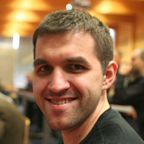
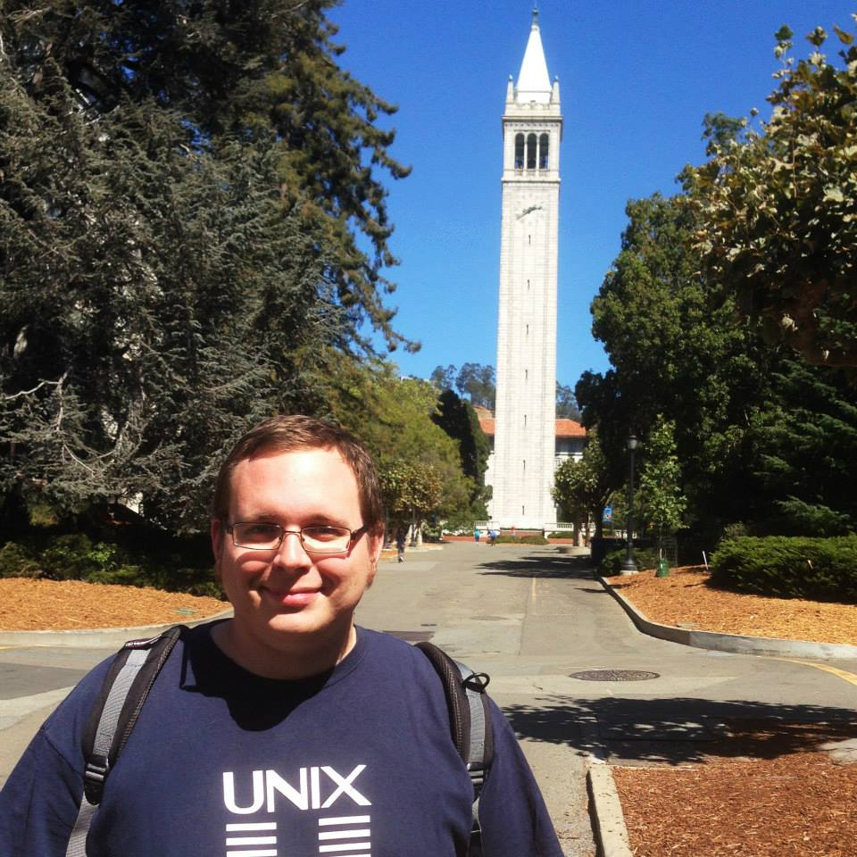
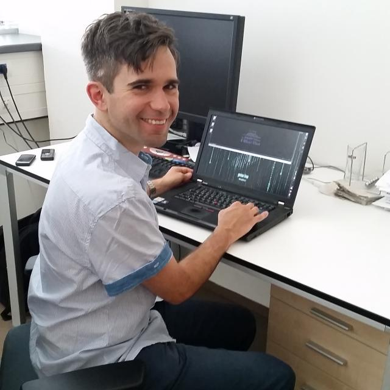
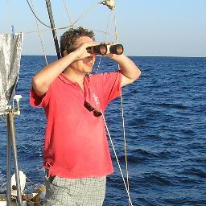
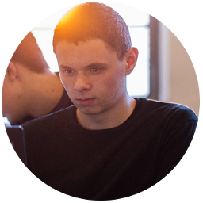
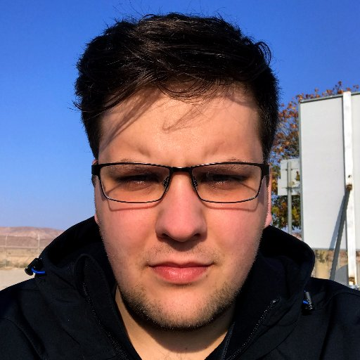
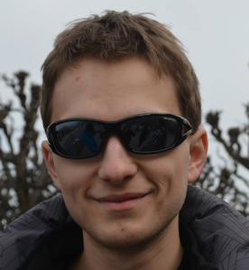

Jiří Eischmann
Manažer zodpovědný za desktopové aplikace v Red Hatu, autor
desítek článků o Linuxu, dlouholetý člen GNOME Foundation, správce
balíčků ve Fedoře a Fedora ambassador pro ČR.
Ondřej Caletka
Ondřej Caletka vystudoval elektrotechnickou fakultu ČVUT v Praze, obor Telekomunikační technika a v současné době pracuje ve sdružení CESNET, provozujícím národní síť vědy a výzkumu jako administrátor a vývojář DNS a e-mailových služeb.
Václav Šístek
Momentálně pracuje jako QA Engineer v SUSE, předchozích 6 let strávil na vývoji historického UNIXového systému ve velké americké korporaci na pozici Release Engineer, kde se mimo jiné zabýval popularizací Jenkinsu a jeho praktickým nasazením na různých projektech. Má za sebou také dráhu GNU/Linux administrátora a je dlouhodobým uživatelem a podporovatelem svobodného softwaru a open source.
Petr Hodač
Vystudoval obor výpočetní technika na Fakultě elektrotechnické ČVUT v Praze a nyní pracuje na Fakultě informačních technologií ČVUT v Praze jako Linux SysAdmin. Ve volném čase organizuje akce LinuxDays, InstallFest a SUT. Příležitosně přednáší na konferencích.
Ondřej Guth
Odborný asistent na FIT ČVUT s odbornými zájmy jako konečné automaty, programování a samozřejmě opensource. Příležitostný admin, nadšený linuxák (Gentoo) i uživatel LaTeXu.
Martin Bílý
V minulém století jsem absolvoval ČVUT FEL, obor Elektronické počítače. Na ČVUT se pohybuji po celý profesní život. Nyní jako správce sítě, základní infrastruktury a ICT služeb fakulty informačních technologií. Příležitostný lektor pro HP, SUN a jiné zaniklé firmy.
Marek Mansell
Marek je študentom Gymnázia Jura Hronca a venuje sa navrhovaniu elektronických komponentov a ich programovaniu.
Podieľal sa na viacerých zaujímavých projektoch, ako je napríklad startup s elektronickými pomôckami pre nevidiacich, inteligentná automatizácia budovy či výroba LED panelov do televíznych štúdií.
Je aktívnym členom združenia SPy, o.z., ktoré organizuje pravidelné Python meetupy a konferenciu PyConSK. Na portáli www.micropython.sk vytvára návody pre hardvérových začiatočníkov.
www.marekmansell.sk
www.linkedin.com/in/marekmansell
Jakub Huspek
Aplikační administrátor ve firmě T-Mobile. Zabývá se především technologií JBoss EAP a její optimalizací.V pozdních hodinách se z něj stává bastlíř v MacGyver - bastlíři SH, kde je zároveň také vedoucí projektu.
Vojtěch Suk
https://twitter.com/VojtechSuk
Adam Hořčica
Adam Hořčica vystudoval softwarové inženýrství na FEL ČVUT. V současnosti pracuje jako vývojář ve firmě Foxconn4tech. Zabývá se především vývojem backendových systému pro integraci. Je členem klubu Silicon Hill SU ČVUT, kde spoluzakládal elektronickou laboratoř - hackerspace MacGyver - bastlíři SH.
Stanislav Miklík
Vyvoju software sa profesionalne venujem uz 12 rokov. Moja aktualna pozicia je CTO vo firme Instea kde aplikujeme inovativne sposoby vyvoja. Verime v otvoreny software a aktivne prispievame do React Native Open Source komunity. Okrem toho som prednasal na Univerzite Komenskeho pocas doktorandskeho studia.
© Spoločnosť pre otvorené informačné technológie